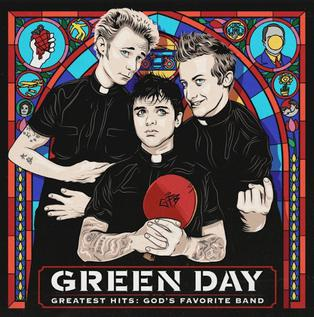

| Artiste | Green Day |
|---|
| Album | Greatest Hits: God's Favorite Band |
|---|
|  | Piste | Titre | Durée |
|---|
| 1 | 2000 Light Years Away | 2:25 |
| 2 | Longview | 3:56 |
| 3 | Welcome to Paradise | 3:45 |
| 4 | Basket Case | 3:02 |
| 5 | When I Come Around | 3:00 |
| 6 | She | 2:15 |
| 7 | Brain Stew | 3:14 |
| 8 | Hitchin' a Ride | 2:52 |
| 9 | Good Riddance (Time of Your Life) | 2:35 |
| 10 | Minority | 2:49 |
| 11 | Warning | 3:43 |
| 12 | American Idiot | 2:56 |
| 13 | Holiday | 3:52 |
| 14 | Boulevard of Broken Dreams | 4:22 |
| 15 | Wake Me Up When September Ends | 4:45 |
| 16 | Knwo Your Enemy | 3:11 |
| 17 | 21 Guns | 5:24 |
| 18 | Oh Love | 5:04 |
| 19 | Bang Bang | 3:27 |
| 20 | Still Breathing | 3:45 |
| 21 | Ordinary World | 3:01 |
| 22 | Back in the USA | 2:36 |
| Source | https://en.wikipedia.org/wiki/Greatest_Hits:_God%27s_Favorite_Band |
|---|